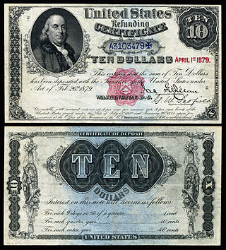

Welcome to Wikipedia,
the free encyclopedia that anyone can edit.
5,160,845 articles in English
Main Page
- Contents
- Featured
- Current events
- Random article
- Donate to Wikipedia
Interaction
- Help
- About Wikipedia
- Community portal
- Recent changes
- Contact page
Tools
- What links here
- Related changes
- Upload file
- Special pages
- Permanent link
- Page information
- Wikidata item
Print/export
- Create a book
- Download as PDF
- Printable version
In other projects
- Wikimedia Commons
- Wikispecies
- Wikibooks
- Wikidata
- Wikinews
- Wikiquote
- Wikisource
- Wikiversity
- Wikivoyage
From today's featured article
Paul Collingwood (born 26 May 1976) was until 2011 a regular member of the England Test cricket team. He is a batting all-rounder, and a medium-pace bowler. His 206 during the 2006–07 Ashes series was the first double century by an England batsman in Australia for 78 years. Three consecutive match-winning performances at the end of the 2006–07 Commonwealth Bank Series in Australia brought him enthusiastic approval in the British media, helping to secure the trophy for England. In 2010 he led the England team to their first International Cricket Council trophy, the 2010 World Twenty20. He has made the most One Day International (ODI) appearances for England and was, until recently passed by Ian Bell, the leading ODI run scorer. He announced his retirement from Test cricket in January 2011, during the 5th Test of the 2010–11 Ashes series. He finished on a high, becoming a three-time Ashes winner as England won a series in Australia for the first time in 24 years, with three innings victories contributing to a 3–1 win. He is regarded as one of the finest fielders of his time. (Full article...)
Recently featured: Operation Copperhead "Push the Button" (Sugababes song) Spanish conquest of Petén Archive By email More featured articles...
Did you know...

- ... that Rathika Ramasamy's wildlife photographs (example pictured) were exhibited at the Clean Ganga Campaign held at the India International Centre in September 2005?
- ... that 1–13 Arundel Terrace in Brighton consists entirely of Grade I listed buildings?
- ... that current Liga de Fútbol Profesional president Javier Tebas is a Real Madrid supporter?
- ... that members of the Welsh churches Holy Trinity Church, Sarn, St Nicholas' Church, Church Stoke, and St Andrew's Church, Presteigne all voted against joining the Church in Wales in order to stay with the Church of England?
- ... that in May 1926 investigator Rose Mackenberg testified before Congress about fraudulent mediums with her mentor, Harry Houdini?
- ... that δ34S values in certain Archean pyrites suggest that sulfate-reducing organisms were present 3,470 million years ago?
- ... that Peter Martyr Vermigli was allegedly challenged to a duel with a double-edged axe by Theodore Bibliander over the doctrine of double predestination?
Recently improved articles Start a new article Nominate an article
In the news

- Binali Yıldırım (pictured) is appointed Prime Minister of Turkey following the resignation of Ahmet Davutoğlu.
- In the Tajikistani constitutional referendum, voters approve theremoval of term limits of incumbent President Emomali Rahmon. Independent Green Alexander Van der Bellen is narrowly elected President of Austria.
- Cyclone Roanu kills at least 90 people and leaves more than 130 missing across Bangladesh and Sri Lanka.
- Austrian Federal Railways CEO Christian Kern succeeds Werner Faymann as Chancellor of Austria.
Ongoing events: EgyptAir Flight 804
Recent deaths: Burt Kwouk Akhtar Mansour Morley Safer
On this day...

May 26: Corpus Christi (various Western Christian churches, 2016); Lag BaOmer (Judaism, 2016); National Sorry Day in Australia; Independence Day in Georgia (1918)
- 451 – Armenian rebels were defeated by forces of the Sassanid Empire on the Avarayr Plain in Vaspurakan, but the loss played a major factor in their being granted religious freedom 33 years later.
- 1637 – Pequot War: An allied Puritan and Mohegan force attacked a fortified Pequot village in the Connecticut Colony, killing 500 people.
- 1822 – The deadliest fire in Norwegian history took place at a church in Grue, Norway, with at least 113 deaths.
- 1906 – Vauxhall Bridge (pictured) in London opened, crossing the River Thames between Vauxhall and Westminster.
- 1991 – Lauda Air Flight 004 experienced an uncommanded thrust reverser deployment of an engine and broke apart in mid-air, killing all 223 people on board.
More anniversaries: May 25 May 26 May 27
Archive By email List of historical anniversaries
Current date: May 26, 2016 (UTC) Reload this page
Today's featured picture

Refunding Certificates were banknotes issued by the United States Treasury in 1879 which originally promised to pay 4% annual interest in perpetuity. Depicting Benjamin Franklin, they were issued only in the $10 denomination. The issuance of these certificates reflects the end of a coin-hoarding period that began during the American Civil War, and represented a return to public confidence in paper money.
Banknote: United States Treasury; image courtesy of the National Numismatic Collection at the Smithsonian Institution
Recently featured: Gas mask Aral Sea comparison The Washington Family
Archive More featured pictures...